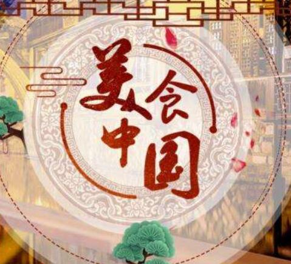

中国饮食文化 在亚洲的东方有一个拥有悠久文明历史的国度，那里有令人垂涎的山珍，也有令人回肠的美味。来自五湖四海的食材和调味品正在无时无刻的触动着亿万人的神经和味蕾
中国饮食文化简介
主食
中国人一日三餐以米面为主食,种植水稻的东南地区以米食为主,种植小麦的华北地区以面食为主。无论是米食还是面食,主食的制作方法种类繁多,主食的品种也丰富多样。常见主食的有米饭、馒头、饼、面条等。
方法
中国菜烹饪方法非常多，有炒、蒸、煮、煎、炸、烧等几十种。中国菜在制作过程中十分讲究火候与刀工，根据原料特点及菜肴制作等要求，用不同火候与时间。同时将原料切成片、丝、块、粒状，甚至是精美形状。
味道
中国菜用料多样,烹饪讲究,注重色香味形俱佳。各地由于气候、物产、生活环境和生活习惯的不同，人们的口味也不尽相同。比如南方人口味清淡，北方人口味较重等等,因此就形成了具有地方特点的菜肴文化。
中华餐桌文化
一、尊重为先
在餐桌上，中国饮食文化非常注重“尊重”二字。对于那些长者，老师或者贵客，通常都要做到谦虚礼让。主人一般会把主菜放在餐桌的中央，其余的菜围绕摆放。在上菜后，也会先让贵宾和长者先品尝。通常主菜会面向贵宾或者年长者，这也显示出尊重的美意。
二、座次
总体来讲，座次排序是“面朝大门为尊”。若是圆桌，则正对大门的为主人，主人左右手边的位置，则以离主人的距离来看，越靠近主人位置越尊，相同距离则左侧尊于右侧。若为八仙桌，如果有正对大门的座位，则正对大门一侧的右位为主客。
三、点菜
在点菜的过程中也是非常的讲究的，如果时间允许，你应该等大多数客人到齐之后，将菜单供客人传阅，并邀请他们来点菜。点菜一般是荤素搭配、有鱼有肉，自己在点菜的过程中要注意客人真正喜欢吃什么，喜欢什么样口味的菜品 ，要做到真正的投其所好。
四、就餐
在吃饭的过程中一定要注意不能光顾着吃饭，当有冷场时，就以饮酒和话题来活跃气氛，要吃中谈，谈中吃。 要做到气氛活跃，不失高雅，诙谐幽默，又不要乱开玩笑、彼此争论，要做到彬彬有利。总之需要察言观色，观察客人的所需、所求。